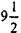
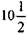
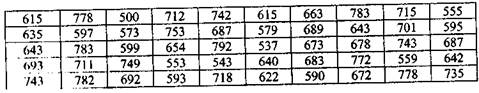
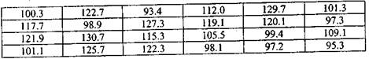
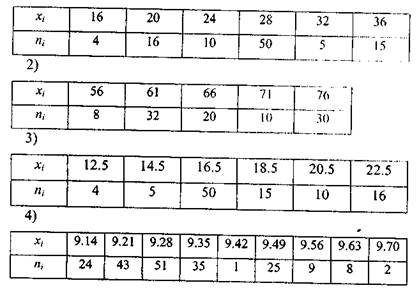
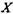
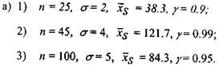
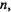
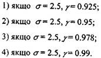

Вправи та завдання до розділу II
І Ви маєте прийняти рішення.
1 Менеджер по персоналу банку зібрав для балансу більше ніж 500 контрольних рахунків за куплені товари, але в оригіналі зібрані дині здались йому таким статистичним матеріалом, що важко піддається обробці. Допоможіть йому досягти розуміння в одержаних даних у зжатій та зрозумілій манері. 2. Для корпорації брокери вивчають рівень прибутковості за останні декілька років чотирьох різних акцій. Всім здається, що всі акції мають однаковий рівень прибутковості за певний період. Брокери мають вирішити проблему ідентифікації цих акцій, щоб передбачити найменший ризик інвестиційних вкладень. Допоможіть
прийняти рішення. 3. У підготовці майбутньої робочої зустрічі з коригування заробітної плати з правлінням корпорації місцеве об'єднання профспілок авторобітників намагається вирішити проблему, а саме: яким чином дані по рівню заробітної плати 350 працівників можуть бути використані для аналізу їх купівельної спроможності, як визначити типовий споживчий кошик робітника корпорації і яка різниця у рівні зарплати має переважати.
Яку методику аналізу можна запропонувати.
II. Концептуальні питання.
ІП Завдання.
6. Нижче дано вибірку, що містить 7 безпосередніх ціп па різноманітні акції, а саме: 27,3; 42.5; 69.7; 39.1; 69.7; 38.5; 29,1 (грн.).
а) Обчислити просту середню, медіану та моду. Інтерпретуйте кожну статистику. Про що говорить кожна із них? Чому воші річні, якщо всі вони середні?
б) Обчисліть та інтерпретуйте дисперсію та середньоквадратичне відхилення.
7. Із ста пар проданих лижних черевиків, 4 пари були 9 розміру,
33 пари мали розмір, 26 були 10 розміру, 29 мали розмір та 8 були 13 розміру. Прокоментуйте використання середньої, медіани, моди як міри центральної тенденції і застосуйте кожну із цих числових характеристик для прийняття рішення щодо розмірів лижних черевиків, які доцільно мати в асортименті. Обчисліть кожну із числових характеристик.
а) вибіркову середню;
б) медіану;
в) вибіркову дисперсію та середньоквадратичне відхилення.

10.Для наступної вибірки, що містить 24 щоденних спостереження кількості км, округлених до однієї десятої, що проїхав пан Н., працюючи агентом з продажу товарів, представлено нижче:

Побудуйте таблицю розподілу частот, що містить 6 класів і обчисліть:
а) вибіркову середню;
б) медіану;
в) вибіркову середню та середньоквадратичне відхилення.
11. Кількість щотижневих годин, відпрацьованих паном Н. за останні два місяці, становлять 52, 48, 37, 54, 48, 15, 42, 12. Вважаючи ці дані за вибіркові, обчислити
а) середню;
б) медіану;
в) моду;
г) розмах;
д) вибіркову дисперсію;
ж) середньоквадратичне відхилення;
з) абсолютну величину відхилення.
12. Знайти методом добутків вибіркову середню та вибіркову дисперсію заданої вибірки 1)

13.Випадкова величинарозподілена нормально. Побудуйте γ-відсотковий довірчий інтервал для невідомого параметру генеральної сукупності, якщо

б)знайти 
